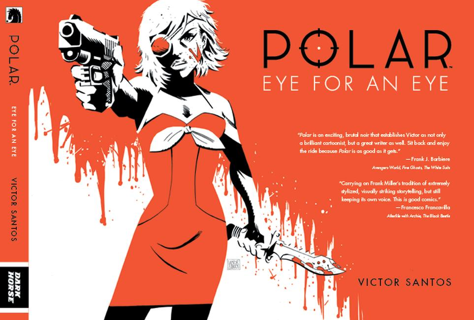
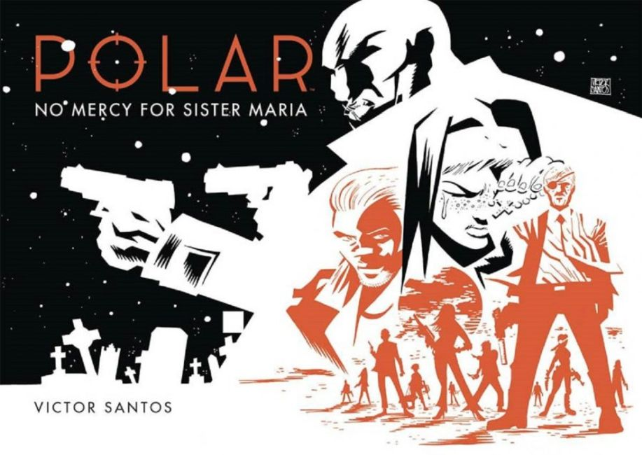

Polar is a 2012 webcomic and series of graphic novels written and illustrated by Victor Santos. Featuring "international hitman Kaiser Black", the webcomic is inspired by a variety of action and noir fiction. Polar is characterized by its highly stylized design and complete lack of dialogue, though speech balloons were added in the graphic novel publications by Dark Horse Comics. A live-action film based on the webcomic is currently in production.

Polar depicts the story of international hitman Kaiser Black, the titular character of Santos' 2009 graphic novel Black Kaiser, as he forced out of retirement after an assassination attempt is made on his life. The story, described as "bleak", features a femme fatale character and a large amount of gore, and it is set in an icy landscape. The webcomic is notable for its lack of dialogue and speech balloons, and features a somewhat minimalistic style in color, being rendered entirely in stark black, white, and orange.

The first pages of Polar were originally released online in January 2012, which was the start of the long-running webcomic series. At the 2013 San Diego Comic-Con, Dark Horse Comics announced that they would publish Polar as a 160-page hardcover graphic novel. This version, which was released in November 2013 as Polar: Came From the Cold, featured dialogue presented in speech balloons. Dark Horse' Jim Gibbons suggested the change as it would make the book more commercially attractive, and Santos already had a version with dialogue in mind, but initially refrained from creating it due to the challenge writing in English presented him.
A second volume of Polar was published by Dark Horse Comics in April 2015, titled Eye for an Eye. A third volume will be released in 2016, titled No Mercy for Sister Mafia. Each Polar book covers one webcomic "season", corrected and expanded upon.